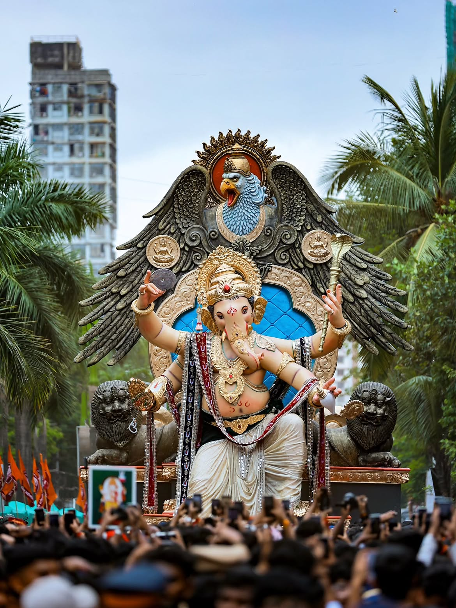

CHINTAMANI GANAPATI
A Century of Faith in Mumbai
Discover the story of Chinchpoklicha Chintamani,
one of Mumbai's well-known public Ganapati celebrations.

A beloved symbol of devotion, community spirit
and Maharashtra's Ganeshotsav tradition.
📜 The History of Chinchpoklicha Chintamani
Chinchpoklicha Chintamani is the popular Ganapati
celebration organised by the Chinchpokli Sarvajanik
Utsav Mandal in Mumbai, Maharashtra.
Historical accounts place the establishment of the
mandal in 1920.
It grew in the working-class neighbourhoods of
central Mumbai, where community celebrations
became an important part of local cultural life.
The festival brought residents together through
worship, shared celebrations and collective
participation. Over the decades, Chintamani became
a recognised name among Mumbai's major Ganapati
celebrations.
The name Chintamani is associated with the
wish-fulfilling jewel in Hindu tradition. Devotees
worship Lord Ganesha as the remover of obstacles
and seek blessings for peace and prosperity.
Read historical coverage of Mumbai's Ganapati mandals
🙏 Traditions and Devotion

Chintamani celebrations bring devotees together
for prayers, aarti, decorations and community
participation.
- Devotees welcome Lord Ganesha with devotion.
- Traditional prayers and aarti are performed.
- Artisans prepare and decorate the Ganapati idol.
- Families and communities celebrate together.
- The festival concludes with Ganapati immersion.
🎉 Ganesh Chaturthi and Mumbai's Cultural Heritage
Ganesh Chaturthi is one of Maharashtra's most
important festivals. Mumbai's public Ganapati
celebrations combine religious devotion with
artistic creativity and neighbourhood traditions.
Chinchpoklicha Chintamani is especially known for
its Aagman Sohala,
the procession and celebration associated with
the arrival of the Ganapati idol.
These traditions connect generations and preserve
the cultural identity of Mumbai's historic
neighbourhoods.
Explore Chinchpoklicha Chintamani's historical timeline